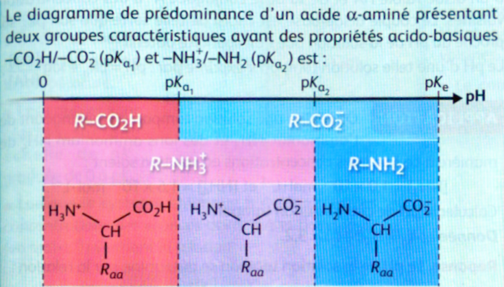

Thème : Transformations chimiques – Acido-basicité · C. Poirault-Gauvin
Identifier, à partir d'observations ou de données expérimentales, un transfert d'ion hydrogène, les couples acide-base mis en jeu et établir l'équation d'une réaction acide-base.
Représenter le schéma de Lewis et la formule semi-développée d'un acide carboxylique, d'un ion carboxylate, d'une amine et d'un ion ammonium.
Identifier le caractère amphotère d'une espèce chimique.
Déterminer, à partir de la valeur de la concentration en ion oxonium H3O+, la valeur du pH de la solution et inversement.
Capacité mathématique : Utiliser la fonction logarithme décimal et sa réciproque.
Associer KA et Ke aux équations de réactions correspondantes.
Associer le caractère fort d'un acide (d'une base) à la transformation quasi-totale de cet acide (cette base) avec l'eau.
Prévoir la composition finale d'une solution aqueuse de concentration donnée en acide fort ou faible apporté.
Comparer la force de différents acides ou de différentes bases dans l'eau.
Capacité mathématique : Résoudre une équation du second degré.
Citer des solutions aqueuses d'acides et de bases courantes et les formules des espèces dissoutes associées.
Représenter le diagramme de prédominance d'un couple acide-base.
Exploiter un diagramme de prédominance ou de distribution.
Justifier le choix d'un indicateur coloré lors d'un titrage.
Citer les propriétés d'une solution tampon.
Question directrice : Comment quantifier l'acidité d'une solution et caractériser les espèces acides ou basiques en solution aqueuse ?
I.1 – pH d'une solution aqueuse
pH = −log([H3O+] / C°)
soit [H3O+] = 10−pH × C°
[H3O+] en mol·L−1 | C° = 1 mol·L−1 (concentration standard) | Valable pour [H3O+] < 0,10 mol·L−1
Le pH quantifie l'acidité d'une solution aqueuse (grandeur sans unité).
Plus [H3O+] est élevée, plus le pH est faible, plus la solution est acide.
Prérequis : Une solution neutre contient autant de H+ que de HO–. Une solution acide en contient plus. Une solution basique en contient moins. La dissolution d'un acide donne pH < 7 ; celle d'une base donne pH > 7.
I.2 – Équilibre acido-basique
➔ La dissolution dans l'eau d'un acide donne pH < 7 ; la dissolution d'une base donne pH > 7.
➔ Si la dissolution d'un composé chimique dans l'eau diminue le pH, ce composé est un acide ; si elle augmente le pH, ce composé est une base.
Méthode
Précision
Remarque
Indicateur coloré
faible (1 à 2 unités)
Rapide, qualitatif
Papier pH
±1 unité
Semi-quantitatif
pH-mètre étalonné
±0,01 unité
Quantitatif, indispensable en TP
🎛️ Simulateur pH — Effet de la dissolution sur le pH
pH
—
🔗 Simulation interactive PhET Mesure le pH de différentes solutions et observe l'effet de la dissolution — idéal pour explorer avant I.3.
Un acide est une entité chimique susceptible de céder au moins un ion H+.
Une base est une entité chimique susceptible d'accepter au moins un ion H+.
Un couple acide/base AH / A– est lié par l'équilibre de Brønsted :
AH ⇌ A– + H+
L'acide AH et la base A– sont dits conjugués.
Amphotère : une espèce est amphotère (ampholyte) lorsqu'elle est à la fois la forme basique d'un couple et la forme acide d'un autre couple. Exemple : H2O est la base de H3O+/H2O et l'acide de H2O/HO–.
Les acides carboxyliques (–COOH) sont des acides faibles ; les amines (–NH2) sont des bases faibles.
Exemples de schémas de Lewis à connaître :
• Acide carboxylique : R–C(=O)–O–H → donne H+ sur le groupement –OH
• Ion carboxylate : R–C(=O)–O– (doublets non liants sur les deux O)
• Amine : R–NH2 (doublet non liant sur N)
• Ion ammonium : R–NH3+
📝 Application – Calcul de pH
On prépare trois solutions :
Solution A : [H3O+] = 1,0 × 10–3 mol·L–1
Solution B : pH = 11,0
Solution C : [HO–] = 2,0 × 10–4 mol·L–1 (à 25 °C)
Q1. Quel est le pH de la solution A ?
pH = –log([H3O+] / C°) = –log(1,0 × 10–3) = 3,0
pH < 7 : la solution A est acide.
Q2. Quelle est la concentration en H3O+ de la solution B (pH = 11,0) ?
L'ion H+ n'apparaît pas dans l'équation finale (il est échangé).
Important : L'ion H+ n'existe pas seul en solution aqueuse. Il est immédiatement transféré de la forme acide d'un couple vers la forme basique de l'autre.
II.2 – Équilibre chimique et symbolisme
➔ Lorsqu'une réaction est totale : l'équation s'écrit avec une flèche simple → et le réactif limitant est totalement consommé : xf = xmax.
➔ Lorsqu'une réaction n'est pas totale, elle est limitée ; elle conduit à un équilibre avec coexistence des réactifs et des produits : l'équation s'écrit avec une double flèche ⇌ et le réactif limitant n'est pas entièrement consommé : xf < xmax.
➔ Le taux d'avancement (Tau, noté ici T) est défini par : T = xf / xmax.
Si T = 1 → réaction totale | Si T < 1 → réaction à l'équilibre.
Type
Écriture
Condition
τ
Réaction totale
HA + B– → A– + HB
xf = xmax
τ = 1
Réaction à l'équilibre
HA + B– ⇌ A– + HB
xf < xmax
τ < 1
τ = xf / xmax
Si τ = 1 → totale · Si τ < 1 → limitée (équilibre)
Pour chaque réaction, identifier si elle est totale ou à l'équilibre, et choisir la bonne flèche.
Q1. On mesure τ = 0,82 pour une réaction. Cette réaction est…
τ = 0,82 < 1 → la réaction est à l'équilibre : réactifs et produits coexistent.
Q2. Quelle flèche utilise-t-on pour écrire l'équation d'une réaction à l'équilibre ?
Une réaction à l'équilibre s'écrit avec ⇌ car les réactifs et les produits coexistent.
Q3. Parmi ces exemples, lequel correspond à une réaction totale ?
HCl est un acide fort : sa réaction avec l'eau est totale (τ = 1), d'où la flèche simple →.
CH₃CO₂H et NH₃ sont des acides/bases faibles : réactions à l'équilibre (τ < 1), d'où ⇌.
II.3 – Autoprotolyse de l'eau et produit ionique Ke
L'eau est amphotère. Elle possède deux couples :
H2O / HO– H2O est l'acide
H3O+ / H2O H2O est la base
2 H2O ⇌ H3O+ + HO–
Réaction d'autoprotolyse : H3O+ et HO– sont toujours simultanément présents dans toute solution aqueuse.
Ke = [H3O+] × [HO–] / (C°)² = 1,0 × 10–14 à 25 °C pKe = –log Ke = 14,0 à 25 °C
Ke dépend de la température (augmente quand T augmente).
📝 Identifier acide et base dans une réaction
On réalise la réaction entre HF et l'eau : HF + H2O ⇌ F– + H3O+
Q1. Quel est l'acide qui cède le proton ?
HF cède un H+ pour donner F– : c'est bien l'acide du couple HF/F–.
Q2. La base qui accepte le proton est…
H2O accepte un H+ pour former H3O+ : c'est la base du couple H3O+/H2O.
Q3. Cette réaction est-elle totale ou à l'équilibre ?
HF est un acide faible (pKa ≈ 3,2) : la réaction est partielle, HF, F–, H2O et H3O+ coexistent à l'équilibre.
📝 Exercice guidé — Démontrer qu'une solution acide a un pH < 7
On considère une solution aqueuse à 25 °C. On admet que Ke = [H3O+] × [HO–] = 10–14, soit pKe = 14,0.
L'objectif est de démontrer par le raisonnement qu'une solution acide a un pH < 7.
Étape 1. En solution aqueuse, exprimer [HO–] en fonction de Ke et [H3O+].
Ke = [H3O+] × [HO–] → [HO–] = Ke / [H3O+]
Étape 2. Une solution est acide si [H3O+] > [HO–]. En substituant [HO–], quelle inégalité obtient-on ?
Solution acide : [H3O+] > [HO–] = Ke / [H3O+]
Donc : [H3O+] > Ke / [H3O+]
Étape 3. En multipliant les deux membres par [H3O+] > 0, que devient l'inégalité ?
[H3O+] × [H3O+] > Ke → [H3O+]² > Ke
Étape 4. La fonction log est strictement croissante sur ]0 ; +∞[. En appliquant log aux deux membres, que devient l'inégalité ?
log est croissante : [H3O+]² > Ke → log([H3O+]²) > log(Ke)
Soit : 2 × log([H3O+]) > log(Ke)
Étape 5. En divisant par 2 puis en multipliant par –1 (ce qui inverse l'inégalité), que trouve-t-on pour –log([H3O+]) ?
2 × log[H3O+] > log Ke
÷ 2 : log[H3O+] > log Ke / 2
× (–1) : –log[H3O+] < –log Ke / 2 = ½ pKe
Donc : pH < ½ pKe
Étape 6. À 25 °C, pKe = 14,0. Conclure sur la valeur du pH d'une solution acide.
pH < ½ × pKe = ½ × 14,0 = 7,0
✓ Une solution acide a donc un pH strictement inférieur à 7,0 à 25 °C.
⚖️ III – Force des acides et des bases
La force d'un acide ou d'une base est liée à l'étendue de la réaction avec l'eau : totale pour les forts, partielle pour les faibles.
III.1 – Acides forts et bases fortes
Acide fort : HA + H2O → A– + H3O+ (réaction totale — flèche simple)
HA n'existe plus en solution : on trouve A– et H3O+ uniquement.
pH d'un acide fort de concentration c : pH = –log(c/C°)
Acides forts courants : HCl (acide chlorhydrique), HNO3 (acide nitrique), H2SO4 (acide sulfurique, fort sur le premier proton). Bases fortes courantes : NaOH (soude), KOH (potasse) → se dissocient totalement : Na+ + HO–.
Attention : solution acide ≠ acide. HCl est l'acide ; la solution d'acide chlorhydrique est la solution contenant H3O+ et Cl–.
Réaction acide fort + base forte : H3O+ + HO– ⇌ 2 H2O (quasi-totale, exothermique). Plus l'avancement est grand, plus l'énergie libérée sous forme thermique est grande.
τ ≪ 1 : l'acide éthanoïque est bien un acide faible (réaction très peu avancée).
📝 Exercice guidé — Démonstration de la relation de Henderson
On considère le couple acide/base AH / A– en solution aqueuse à l'équilibre.
L'objectif est de démontrer la relation : pH = pKA + log([A–]éq / [AH]éq).
Étape 1. Écrire l'expression de KA pour le couple AH / A–.
KA = [A–]éq × [H3O+]éq / ([AH]éq × c°)
c° = 1 mol·L–1 est la concentration standard (permet à KA d'être sans unité).
Étape 2. Appliquer –log aux deux membres. Que devient le membre gauche ?
–log(KA) = pKA par définition.
Étape 3. Décomposer –log du membre droit en utilisant log(a × b) = log(a) + log(b) et log(a/b) = log(a) – log(b).
✓ Relation de Henderson : pH = pKA + log([A–]éq / [AH]éq)
Cette relation est très utile pour calculer le pH d'un mélange acide/base conjugués.
📝 Simulateur – Calcul de pH selon l'espèce et la concentration
Choisissez une espèce chimique et sa concentration. Observez le pH sur la règle, puis calculez-le vous-même et vérifiez.
pH calculé
—
✏️ À vous — calculez le pH
➕ Suppléments
Ces notions complètent le cours et sont exigibles au baccalauréat : indicateurs colorés, solutions tampons, acides α-aminés.
1 – Indicateurs colorés
Un indicateur coloré est un couple AHind/Aind– dont les deux formes ont des couleurs différentes. Selon le pH du milieu, l'une des formes prédomine :
Indicateur
pKa
Zone de virage
Couleur acide (AHind)
Couleur basique (Aind–)
Hélianthine (orange de méthyle)
≈ 3,5
3,1 – 4,4
Rouge
Jaune
Rouge de méthyle
≈ 5,1
4,4 – 6,2
Rouge
Jaune
Bleu de bromothymol (BBT)
≈ 7,0
6,0 – 7,6
Jaune
Bleu
Phénolphtaléine
≈ 9,4
8,2 – 10,0
Incolore
Rose
Zone de virage : [pKa – 1 ; pKa + 1]. Dans cette plage, les deux formes coexistent et la couleur résulte du mélange. Choix pour un titrage : la zone de virage de l'indicateur doit encadrer le pH à l'équivalence.
📝 Choisir un indicateur coloré
On titre un acide fort par une base forte. Le pH à l'équivalence est 7,0.
Quel indicateur est le plus adapté ?
Le BBT vire entre 6,0 et 7,6 : sa zone encadre bien le pH à l'équivalence (7,0). ✓
La phénolphtaléine serait utilisable pour un titrage acide faible / base forte (pH > 7 à l'équivalence).
🎨 Simulation — Couleur des indicateurs selon le pH
7,0
2 – Solution tampon
Propriété : le pH d'une solution tampon varie peu lors d'un ajout modéré d'acide fort ou de base forte, ou lors d'une dilution.
Composée d'un acide faible HA et de sa base conjuguée A– en concentrations voisines.
pH ≈ pKa avec pKa – 1 < pH < pKa + 1 (zone optimale de tamponnage).
Lorsque pH = pKa : [HA] = [A–] → pouvoir tampon maximal.
Exemple biologique : Le sang humain est tamponné par le système H2CO3/HCO3– (pKa ≈ 6,1) et par les protéines. Le pH sanguin est maintenu autour de 7,4.
📝 QCM – Propriétés d'une solution tampon
Le pH d'une solution tampon varie peu lors d'un ajout modéré d'acide fort.
Une solution tampon est déstabilisée par une dilution importante.
Le pouvoir tampon est maximal lorsque pH = pKa.
Un tampon est composé d'un acide fort et de sa base conjuguée.
📝 Solution tampon – CH₃CO₂H / CH₃CO₂⁻
On prépare un tampon en mélangeant 60 mL d'acide éthanoïque à 0,10 mol·L–1 et 40 mL d'acétate de sodium à 0,10 mol·L–1. pKa(CH3CO2H) = 4,75.
pH < pKa : la forme acide CH3CO2H prédomine légèrement.
🧪 Simulation — Effet tampon sur le pH
Comparez l'effet d'un ajout d'acide fort (HCl) sur une solution tampon vs une solution non tamponnée.
Tampon : CH₃CO₂H / CH₃CO₂⁻ à pKa = 4,75 — concentrations égales c = 0,10 mol·L⁻¹ — Volume = 100 mL.
0,0 mL
Solution tamponnée
4,75
ΔpH = 0,00
Solution non tamponnée (eau pure)
7,00
ΔpH = 0,00
3 – Acides α-aminés
Un acide α-aminé possède un atome de carbone portant à la fois un groupe –COOH et un groupe –NH2. Il a donc deux pKa :
Couple
pKa (ordre de grandeur)
–COOH / –COO–
pKa1 ≈ 2 (acide plus fort)
–NH3+ / –NH2
pKa2 ≈ 9–10 (acide plus faible)
Zwitterion (amphion) : la forme portant –COO– et –NH3+ est à la fois chargée + et –. Elle est la base du couple 1 et l'acide du couple 2 → c'est une espèce amphotère.
Elle prédomine pour pKa1 < pH < pKa2.
Diagramme de prédominance d'un acide α-aminé :

Le pH du point isoélectrique : pHI = (pKa1 + pKa2) / 2
🔬 Simulation — Diagramme de prédominance d'un acide α-aminé